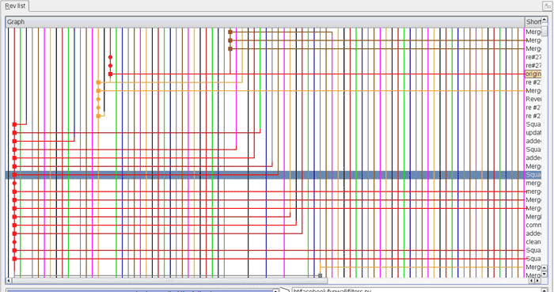

前言
我们 iOS 组的每个项目都是多条分支，每个开发者一条分支，三个人就是三条分支，我作为组长我是 Master 分支。其他部门的同事问到我，项目的分支应该是一条还是多条？有同事认为，一条 master 分支就够了，不需要那么多条分支。该篇文章就分支管理问题做一番自己的想法记录。
思考
如果分支只需要一条，那【分支】的设计意义是什么？思考并查看下面的两个情景。
情景一
假设现在采取一条分支的管理方法，项目团队的每个人负责完全不相关的模块。如果团队成员之一的你 Push 了一份有问题的代码，其他成员在开发完他自己的模块之后，Push 之前就得 Pull Master 的代码，也就是会 Pull 到你的错误代码。这就会导致他的代码有问题了。此时，他有两种选择，一是 checkout 掉 pull 下来的你的代码，在线等你去修复 Master 上的代码，然后你 Push 后他再次 Pull 修复后的代码，再 Push 他的代码；二是直接帮你改你的错误，修复你的 Bug 后再 Commit Push。
现在来分析，选择一的话，他的代码只能 Commit 在本地然后在线等你修复。在你修复完成之前，如果他的电脑炸了，他写的代码就没了。选择二，不合理，本来就是每个人负责一个模块，结果他却要帮你改一个不属于他负责的模块，成本也比较高，这是非常不合理的。
你也许会不服，那么请看情景二。
情景二
作为团队一员的你准备开发一个新功能，但是需要两周才能完成，第一周你写了50%的代码。
- 如果立刻提交，由于代码还没写完，不完整的代码可能会影响到别人出现 bug。
- 如果只 Commit 不Push，等代码全部写完再一次提交，那么代码丢失的风险就很大了。万一哪天电脑炸了，你之前写的代码全没了，Commit 将毫无意义。就算电脑没事，你们的项目网络里一直都没有你的 log，你的领导完全看不到你的进度，怎么办？
结合情景，谈谈我们现在的管理方式
如前言所说，我们现在的分支管理方式是每人一条分支，Master 统一进行 Merge 操作，协作者只 Pull Master 的。
针对情景一，每个人做完想 Commit 就 Commit，想 Push 就 Push，再也没有代码丢失的风险。就算你提交了有 Bug 的代码到你自己的分支，也不会对别人造成影响。别人也一样，Push 到他们各自的分支上去，每次 Push 的时候也不用Pull，因为相对于自己的分支来说，与远程仓库相比每次自己的代码都是最新的。只是有必要的时候，想拥有当前最新的代码，就从 Master Pull，因为 Master Merge 的时候会确保没有问题再 Push，也就保证了你 Pull Master 的时候是没有问题的。
针对情景二，你每次做一点就 Push 一点，就算你的电脑炸了，你也可以从远程仓库拉到你的代码，很安全。而你的领导，也可以切换到你的分支，看到你的 log 来把控进度。
谈谈正确姿势
其实我们这样子的做法还不是最正确的姿势，因为我们的迭代速度还比较缓慢，一个1.0都要持续开发较长时间。在快速迭代开发的时候，Master 应该作为一个稳定的版本分支，v1.0 v2.0等等。而我们现在做法中的 Master 分支应该是 dev 分支，负责人负责把其他同事的代码合并到 dev，其他同事只从 dev Pull 代码。版本成熟时，负责人再把 dev Push 到 Master，发布并打 tag 版本。
另外，还应该有一条 bug 分支，但是生命周期很短。当Master上的版本发现 bug 时，临时创建 bug 分支，起点为 Master。修复完 bug 后，Merge 到 Master 和 dev，确认修复后删除 bug 分支。
也就是说，一般的项目分支结构应该是这样的，Master 分支用于发布，dev 分支作为开发的总分支，bug 分支用于修复，除此三条常设分支外，每个开发人员一条基于 dev 的分支，用于每个人的开发。
- Master
- dev
- 开发者1
- 开发者2
- 开发者n
- bug
更正确的姿势
上面所说的姿势是面向中小型开发团队的，如果开发团队很庞大，就很可能会留下一个枝节蔓生、四处开放的版本库，到处都是分支，完全看不出主干发展的脉络。项目网络很可能就会变成这样子。

这个时候，leader 注重的已经不是个人的开发进度了，而是整体的项目推进情况。不太需要针对每个人进行把控，这个时候开发者每个人一条分支就不合适了。此时应该废掉开发者每个人的分支，只留三条常设分支。
- Master
- dev
- bug
（此时如果还怕代码丢失？想想其他办法，绕一点实现也可以啊，百度云盘啊大兄弟。）
总结
Git 分支管理是一门艺术，具体还得看团队规模，实力。如果开发团队人数较少，并且在敏捷开发的情况下，推荐用多条分支的形式来进行开发。